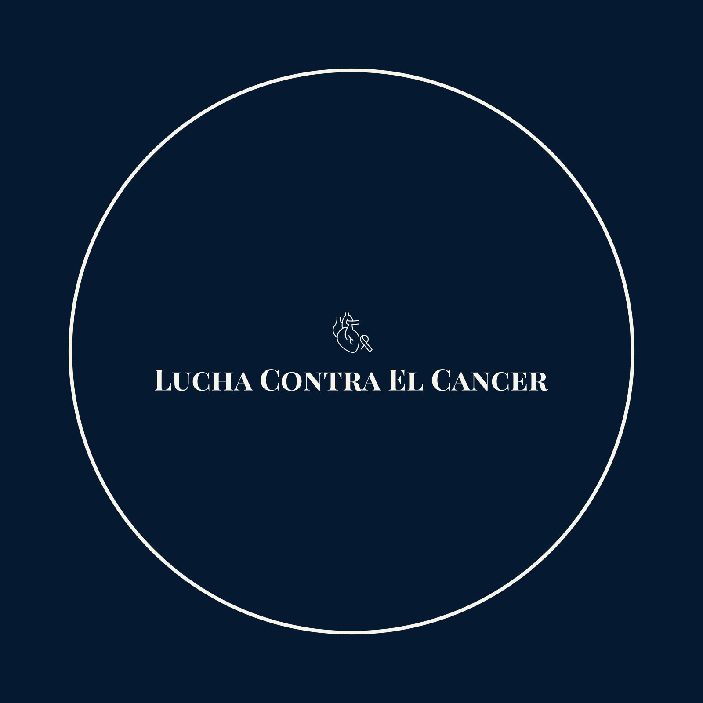

Recolectar tapitas de plastico para pagar tratamientos de niños con insuficiencia renal.
Se centra en la recolección de tapitas de plástico con el objetivo de apoyar el tratamiento de niños con cáncer o con problemas de insuficiencia
renal, y sensibilizar sobre la importancia del reciclaje.
FASE 1
Recolección de tapitas
Se les pedirá juntar tapitas de todos los tipos.
FASE 2
Clasificación de tapitas.
Esta fase incluye la clasificación de las tapitas por diferentes características (forma, color, peso)
y la entrega de las tapitas limpias a centros de acopio para su posterior procesamiento y reutilización.
FASE 3
En busca de ayuda.
En esta ultima fase se promueve la participación comunitaria a través
de campañas de recolección y la realización de trabajos lúdicos relacionados con las tapitas.